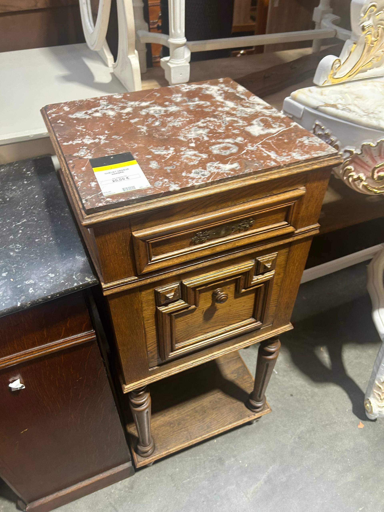
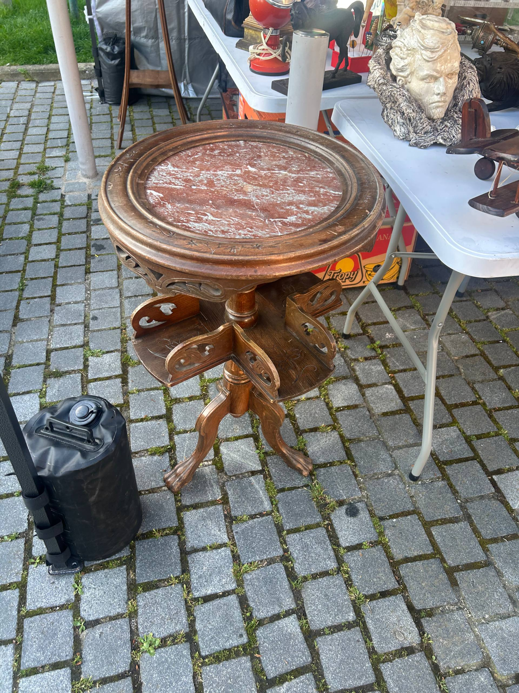
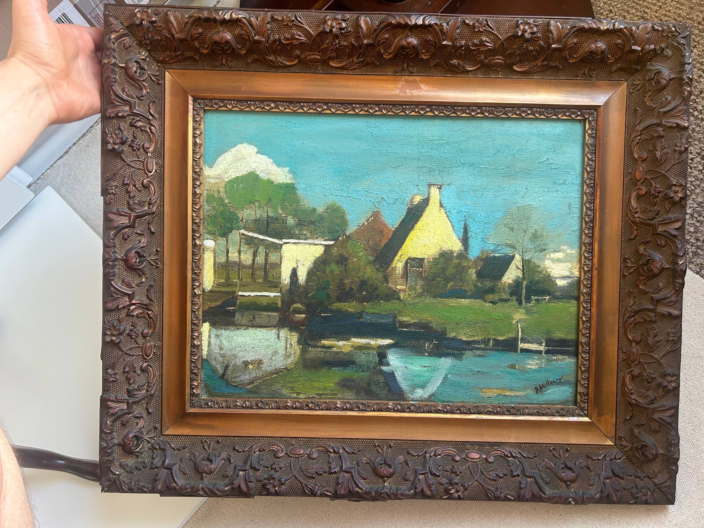

Last updated: 1 May 2026
Marché aux Puces de Saint-Ouen: A UK Buyer’s Guide
The Marché aux Puces de Saint-Ouen is the largest antiques market in the world — about 2,000 dealers spread across 15 named sub-markets in the suburb just north of Paris. If you’re a UK reseller making one trip to France, this is the closest you’ll get to a one-stop shop. You can do it in a day from London via Eurostar.
This guide is built from the official market data plus over 200 visitor reports from r/ParisTravelGuide and r/Antiques. The interesting stuff isn’t in the tourism brochures — it’s things like which Métro stop has the less rough walk in, which sub-market is messiest (and cheapest), and which dealer everyone names when someone asks “where do I buy vintage glass at Saint-Ouen?”

“Saint-Ouen is the world’s biggest antiques market, but the practical question for a UK reseller is which of the 15 sub-markets to actually walk — that’s what we set out to answer.” — Oleksandr Prudnikov, FlipperHelper developer and active reseller
What is the Marché aux Puces de Saint-Ouen?
The Marché aux Puces de Saint-Ouen (literally “Saint-Ouen flea market,” also called Les Puces de Paris Saint-Ouen or Puces de Clignancourt) sits across the Paris ring road in the commune of Saint-Ouen-sur-Seine, dept 93. It started in the 1880s as a place where rag-and-bone men could resell salvage outside the city wall. Today it covers about 7 hectares and contains 15 named indoor sub-markets plus an outdoor street market, all adjacent to one another.
One regular described the layout to a first-time visitor as “a maze (14 market halls plus an outdoor messy flea market)” — that’s the right mental model. There’s no single entrance and no central map at the gates. You wander.
The Saint-Ouen address is Avenue de la Porte de Clignancourt / Rue des Rosiers, 93400 Saint-Ouen-sur-Seine. Free entry. Most dealers in the larger halls take cards; smaller stalls in Vernaison and Dauphine are cash-friendlier.
When is the Saint-Ouen flea market open?
The official hours, per pucesdeparissaintouen.com:
- Saturday: 10:00–18:00
- Sunday: 10:00–18:00
- Monday: 11:00–17:00 (this is the quietest day — some halls have many shutters down)
- Friday morning 8:00–12:00: reserved for trade buyers — registered professionals only
This means the market is open four days a week, not just weekends. A Reddit visitor confirmed the Friday access for trade: “Puces de Saint Ouen are open on Friday mornings.” Another asked specifically “Paul Bert/Serpette on Friday morning?” — yes, this is when the dealers buy from each other before the public arrives. UK resellers who can register as a trade buyer get first refusal on stock and can negotiate without crowds.
Hours vary by sub-market and by dealer. The named halls (Paul Bert Serpette, Vernaison, Dauphine, Biron) are the most consistent. Outdoor stalls and the smaller markets close earlier, especially on Monday.
How do you get to Saint-Ouen from the UK?
By Eurostar (no car needed): London St Pancras → Paris Gare du Nord, ~2h15. From Gare du Nord, two routes onto the Métro:
- Métro 4 to Porte de Clignancourt — most direct (about 25 min). Then a 10-minute walk past the périphérique into the market. Regulars warn that this walk is in “a messy area, as most of the northern gates of Paris”
- Métro 13 to Garibaldi — the local recommendation for first-timers. One regular: “you can use line 4 but I prefer to arrive from the 13, area is less messy”
By car: Eurotunnel from Folkestone to Calais, then ~290 km / 3h drive on the A1 to Saint-Ouen. The advantage of driving is that you can buy furniture and load straight into your car — especially at Paul Bert Serpette where vehicle access is allowed in the alleys.
Either way, plan for at least half a day at the market. A regular Reddit advisor: “you should really take at least half a day to wander here and there and you may find gems.” Most first-timers leave saying they didn’t have time.
For driving from the UK to France in detail (Eurotunnel, Crit’Air, customs on the way back), see our guide on sourcing stock from France.
What’s at Marché Paul Bert Serpette?
Paul Bert and Marché Serpette are two adjoining sub-markets that operate together as Paul Bert Serpette. Combined they cover 14,000 m² with about 370 dealers, making this the largest single-venue antiques market in the world (paulbert-serpette.com).
What you find here:
- 17th–20th-century furniture — including significant signed and museum-quality pieces
- Silver, glass, ceramics, paintings, mirrors, lighting
- 20th-century design (Art Deco through to 1990s) — this section is particularly strong
- Vintage clothing and luxury fashion (some dealers specialise in vintage Hermès, Chanel, Vuitton bags)
One regular summarised: “Biron and Paul Bert/Serpette lean toward polished, expensive pieces, while Vernaison is messier but often cheaper and better for deals.” Another: “The best dealers are in Paul Bert Serpette and Marche Biron but it’s quite expensive.”
Specific shops named by repeat visitors include Voyages for vintage designer bags, Les tables d’Eva, and Cristal de France. If you can manage Friday trade access, this is the hall you target first.
What’s at Marché Vernaison?
Marché Vernaison is the original Saint-Ouen market — opened 1885, with around 300 stalls. It’s the closest to a traditional brocante in feel, the messiest layout, and the consistently most-recommended hall for resellers looking for stock to flip rather than display pieces.
What people buy here:
- Kitchenalia, antique copper pots, vintage tableware, porcelain
- Books, postcards, posters, ephemera
- Vintage clothing and accessories at lower price points than Paul Bert Serpette
- Trinkets, glass, costume jewellery, oddments
A repeat visitor wrote: “St Ouen will have literally everything — for smaller items try Marché Vernaison.” Another recommended “marché Vernaison more specifically… you may find gems even for [other] items.”
Specific stalls named by visitors:
- Tombées du Camion — the most-mentioned stall in our sample (cabinet of curiosities, oddities, costume jewellery, salvage)
- Catherine Daveau-Bitton — vintage glassware
- Maxime Castillo — vintage and modern glassware
- Lamidesarts — tableware and porcelain
If your stock is the sort that fits in a Eurostar suitcase, start at Vernaison.
What’s at Marché Dauphine?
Marché Dauphine is the second-largest covered hall — 150+ dealers under a glass roof, opened 1991. Where Vernaison is messy and Paul Bert Serpette is polished, Dauphine sits between — modern, well-lit, organised by dealer type.
The Reddit consensus is that Dauphine’s strength is pop culture, records, and 20th-century collectibles:
- “Marché Dauphine specifically has a bunch of vendors focused on more pop culture oriented stuff: records, magazines, etc.”
- “The marché Dauphine within it has a big variety of collectibles and goods.”
- “Look at Marché Dauphine, or Marché Jules” — recommended by a Paris regular for surprising finds
Useful for vinyl, vintage magazines, posters, mid-century design at gentler prices than Paul Bert. Also stocks 17th–20th-century furniture, antique books, old toys, and vintage clothing.
What’s at Marché Biron?
Marché Biron sits at the polished end — 220 dealers specialising in 18th–19th-century furniture, silver, paintings, and fine jewellery. It’s the most expensive hall after Paul Bert Serpette and runs to museum-quality pieces.
One visitor described it: “The Biron Market at the Porte de Clignancourt Flea is truly a site to behold, and would easily bankrupt us had we not the discipline.”
Stalls named by visitors:
- Galerie Laure Édouard — silverware, silver table sets
- Emmanuel Redon Silver Fine Art — another silverware specialist
Biron is where to come for investment stock — the kind of pieces that hold value at UK auction houses. Not where to come for cheap turnover.


The other 11 sub-markets (briefly)
The 15 named markets at Saint-Ouen are:
- Marché Vernaison — 1885, traditional flea market vibe (covered above)
- Marché Paul Bert Serpette — antiques and design (covered above)
- Marché Dauphine — pop culture and 20th c. collectibles (covered above)
- Marché Biron — 18–19th c. furniture, silver, fine art (covered above)
- Marché Antica — smaller antiques hall, mixed periods
- Marché Cambo — furniture, paintings, mid-tier prices
- Marché Jules Vallès — flea-market style stalls in an open passage
- Marché Le Passage — industrial design, lighting
- Marché Malassis — mixed antiques, smaller
- Marché Malik — low-cost vintage and contemporary clothing (a younger crowd)
- Marché L’Entrepôt — oversized items: industrial pieces, statues, garden antiques
- Marché Lécuyer-Vallès — smaller, mixed
- Marché Django Reinhardt — jazz heritage location, mixed dealers
- Marché Rues et Brocantes — open-air street stalls, the messiest section
- Marché L’Usine & Marché Lécuyer — industrial and vintage
You won’t see all 15 in one trip. Pick three based on what you sell.
Is Saint-Ouen flea market safe?
The market itself is fine during opening hours. The complication is the area between the Paris ring road and the market gates. One Reddit regular described it accurately: “the path to access can feel sketchy for first timers as the zone between Paris limit and the market is quite poor.”
Practical advice from regulars:
- Use Métro 13 Garibaldi station rather than Métro 4 Porte de Clignancourt if you’re uncertain — the walk in from Garibaldi is shorter and less rough
- Don’t linger after dark — one regular: “Once the metro is closed (around 1am), I recommend you take a Vélib so you can avoid Porte De Clignancourt at night”
- Standard Paris pickpocket precautions — bag closed, phone in front pocket, don’t flash cash. Same as any Métro 4 stop
- The actual market and the gentrified streets around the named halls are “safe and gentrified” per a former resident
Don’t let the area put you off. People go all the time. Just don’t arrive at 11pm.
Can you haggle at Saint-Ouen?
Yes — and you should. Most dealers expect some negotiation, particularly on multi-item purchases. Saint-Ouen is a pro-dealer market: the people behind the stalls source for a living, so they price with margin built in.
What to expect on price:
- Saint-Ouen is the most expensive Paris flea market. One visitor: “there is nothing cheap about the St Ouen flea market.” Another: “St Ouen is a lot of larger expensive items”
- Bring cash for smaller stalls. Top-voted Reddit advice: “BRING CASH.” Cards work in larger halls but cash is faster and helps haggling
- Vernaison and Dauphine are cheaper than Paul Bert Serpette and Biron. Stick to the right hall for your budget
- For bargain hunting, try Vanves or vide-greniers instead. One regular: “Vanves you might actually buy something, Saint Ouen is a lot of large and expensive items you might marvel at while enjoying the atmosphere”
For UK resellers: even at Saint-Ouen prices, vintage furniture and design is significantly cheaper than UK auction houses. The margin is on resale, not the deep-discount sourcing you’d get at a Sunday vide-grenier.
Is it worth it as a first-timer?
Mixed but mostly yes. The strongest dissent: “personally I don’t bother taking the trip unless I’m showing it to someone coming out of town.” The strongest endorsement: “It’s a unique flea market, worth it IMO.”
The honest answer for a UK reseller: yes, once. It’s the world’s biggest antiques market and you should see it before deciding it’s not your sourcing destination. After that visit you’ll have a clear sense of whether it’s where your stock comes from, or whether you should focus on the other French brocantes — the Sunday vide-greniers in Hauts-de-France, the Réderie d’Amiens, the Foire de Chatou. See our 2026 calendar of French brocantes for the alternatives.

What to bring
- Cash — €100–200 in small notes for smaller stalls. ATMs in the area exist but the queues at weekends are bad
- Cards — for the larger halls (Paul Bert Serpette, Biron, Dauphine)
- A foldable trolley or duffle — if you’re on Eurostar. For furniture, drive
- FlipperHelper or your usual tracker — log items in EUR with auto exchange rate. The customs declaration on the way back wants category totals in EUR, not GBP
- A measuring tape — for furniture sized for European apartments
- Patience — many dealers don’t open until 10:30 even on a Saturday. Don’t arrive at 9
Frequently asked questions
What are the Marché aux Puces de Saint-Ouen opening hours?
Saturday 10:00–18:00, Sunday 10:00–18:00, Monday 11:00–17:00. Friday 8:00–12:00 is reserved for trade buyers. Hours vary slightly by sub-market and by individual dealer — the larger covered halls (Paul Bert Serpette, Biron, Dauphine) are the most consistent.
What is Marché Paul Bert Serpette?
Two adjoining sub-markets within Saint-Ouen that operate together — 14,000 m² with around 370 dealers. The largest single-venue antiques market in the world. Specialises in fine furniture, silver, 20th-century design, and high-end vintage clothing. Vehicle access in the alleys for loading.
Which Saint-Ouen sub-market is cheapest?
Marché Vernaison — the original 1885 hall with about 300 stalls. Messier than Paul Bert Serpette and Biron, with smaller items at lower prices. Best for kitchenalia, books, vintage clothing, and bric-à-brac. Marché Malik is also cheaper but skews toward contemporary clothing for a younger crowd rather than antiques.
How do I get to Saint-Ouen flea market from London?
Eurostar from London St Pancras to Paris Gare du Nord (~2h15), then Métro line 4 to Porte de Clignancourt (~25 min) or Métro line 13 to Garibaldi. Local advice is to use line 13 if you’re uncertain — the walk in from Garibaldi is less rough. Total London-to-market time about 3h15 by train.
Is Saint-Ouen safe for tourists?
The market itself is safe during opening hours. The walk in from Métro Porte de Clignancourt passes through a rough area — keep your bag closed and don’t linger. Avoid the Porte de Clignancourt area after dark. Standard Paris precautions apply.
Can I find vintage furniture at Saint-Ouen to drive back to the UK?
Yes — this is the right market for it. Marché Paul Bert Serpette in particular allows vehicle access for loading. Drive in via Eurotunnel and the A1; bring a van or estate car for any pieces over a metre. Watch your customs limits on the way home (20% VAT and import duty apply, see our sourcing from France guide).
Can I haggle at Saint-Ouen?
Yes, and dealers expect it. Open with a polite question about price (in French if you can — “c’est votre meilleur prix?” works), be ready to walk away, and consider bundling multiple items for a better deal. Cash makes you the easier customer and unlocks faster discounts than card.
Related reading
- Best French Brocantes 2026: UK Reseller Sourcing Calendar — the wider 2026 calendar including Lille Braderie, Réderie d’Amiens, Foire de Chatou
- Sourcing Reselling Stock from France: UK Guide to Driving, Customs & Costs — how to actually get there and back
- Vintage Market Reselling Guide — sourcing and selling vintage in the UK
- Best Items to Resell in the UK — what sells well once you bring stock home
Track your Saint-Ouen finds with FlipperHelper
Free iOS app with multi-currency support. Log purchases in EUR at every stall, track Eurostar and hotels as transport, and see your real profit per trip. Works offline — useful when the Saint-Ouen WiFi is patchy and the dealer is waiting for you to decide.
Download Free on the App Store